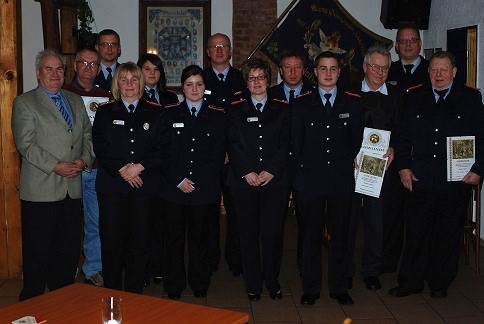

Jahreshauptversammlung 2012: Ein Abend der Auszeichnungen
Die Jahreshauptversammlung 2012 stand ganz im Zeichen der Dankbarkeit für jahrzehntelanges Engagement. Besonders feierlich war die Ernennung von Jürgen Schneider zum Ehrenmitglied. Auch Dietmar Schecht erhielt diese besondere Würdigung und wurde zudem für 40 Jahre Treue geehrt.
Ein Raunen ging durch die Versammlung bei der Ehrung von Manfred Kuhnt, der auf stolze **50 Jahre** Feuerwehrgeschichte zurückblickt. Ebenfalls geehrt wurden Rudolf Tacke (40 Jahre) sowie Tanja Schlögl und Karsten Rößler für jeweils 25 Jahre pflichtbewussten Dienst.
Starke Aufstiege im Dienstgrad
Auch die aktive Einsatzabteilung stellte sich für die Zukunft auf: Dirk Schünemann wurde zum Ersten Hauptlöschmeister befördert und Tina Bergmeier zur Ersten Hauptfeuerwehrfrau ernannt. Zudem freuen wir uns über den Aufstieg von Sebastian Pietsch zum Oberfeuerwehrmann sowie die Ernennung von Christine Flege und Jasmin Bergmeier zu Feuerwehrfrauen.
